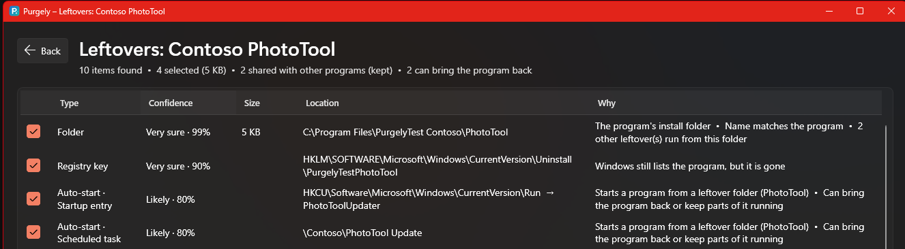
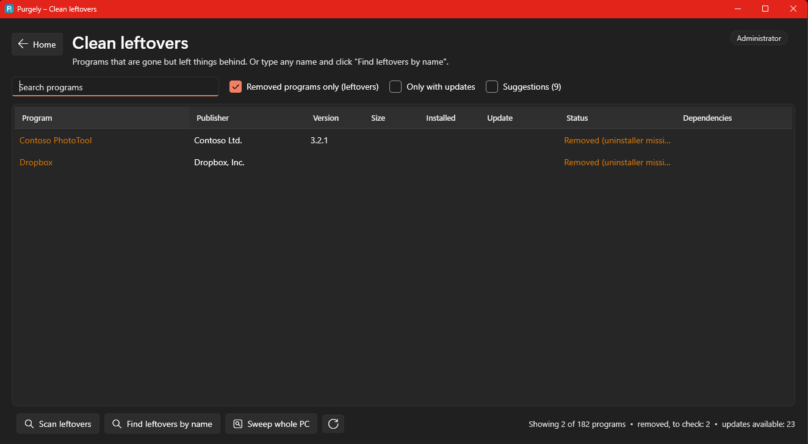
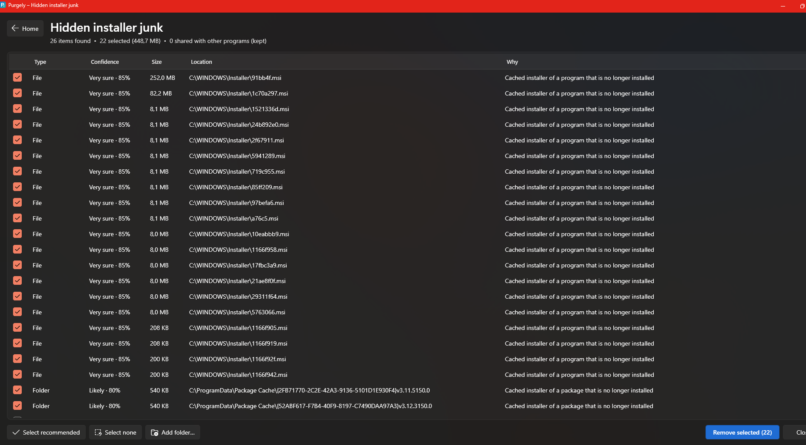
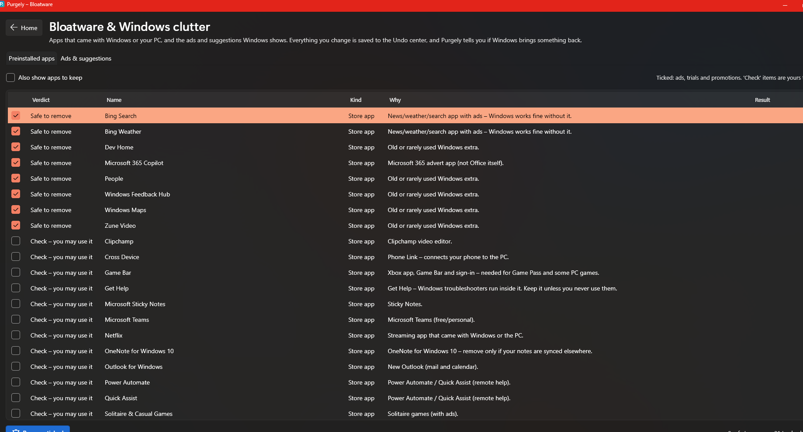
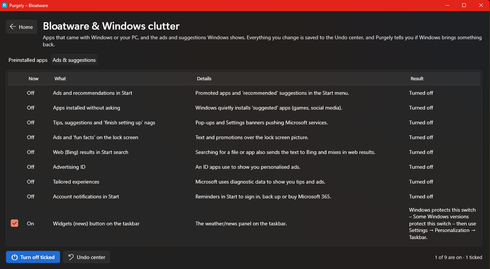
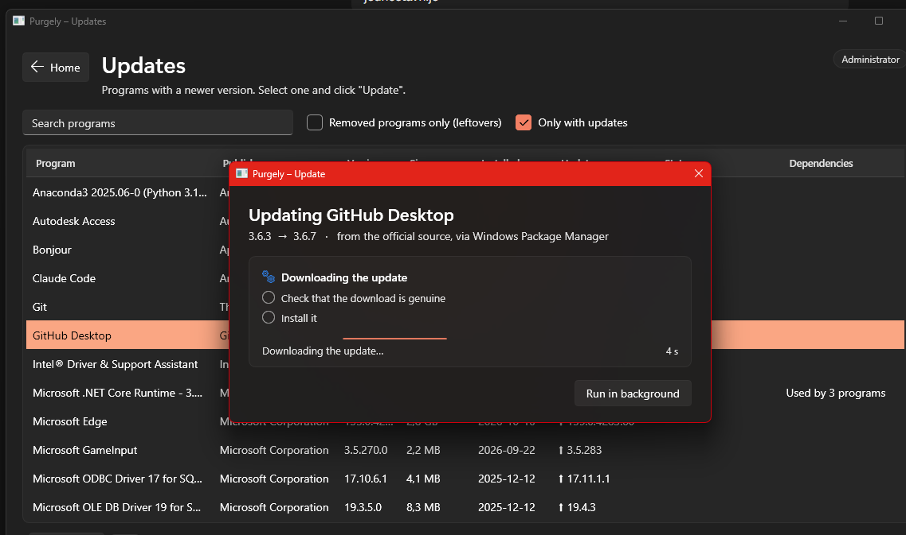
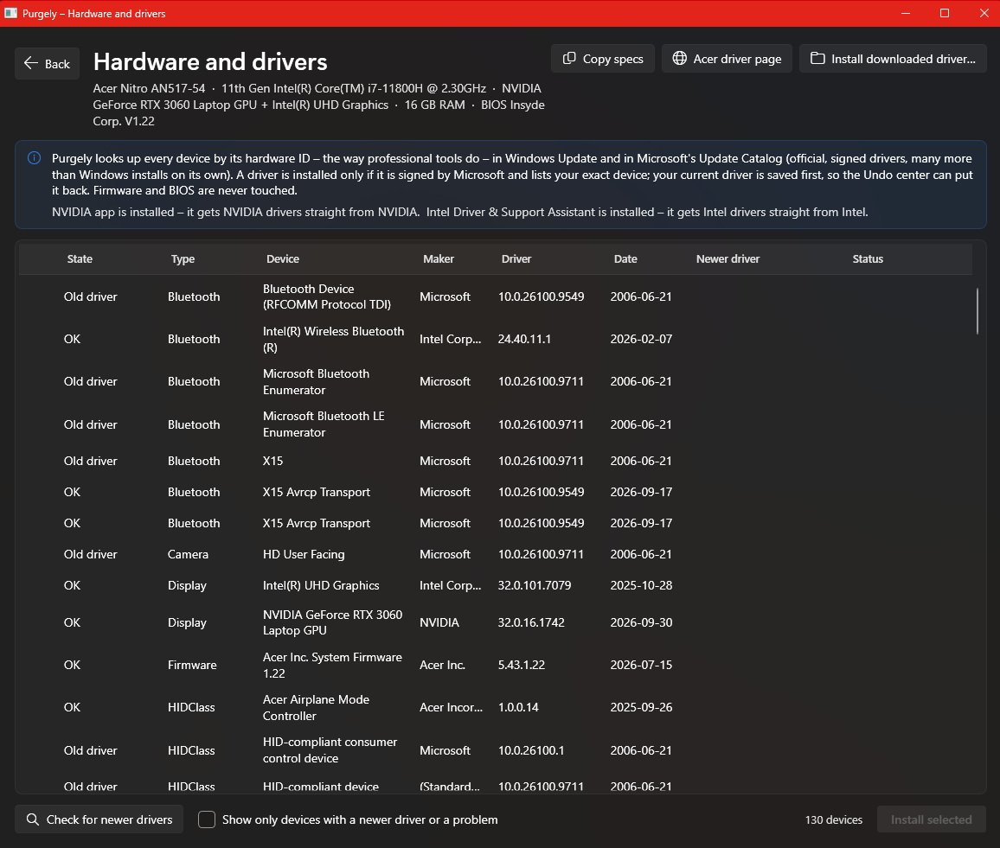
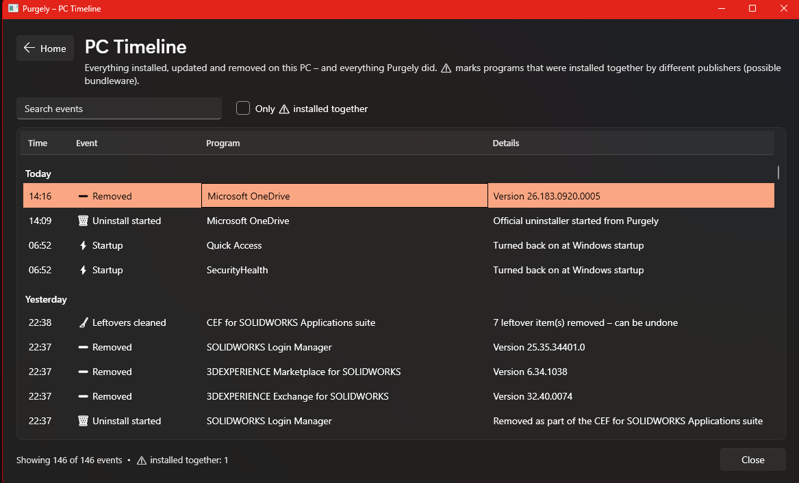
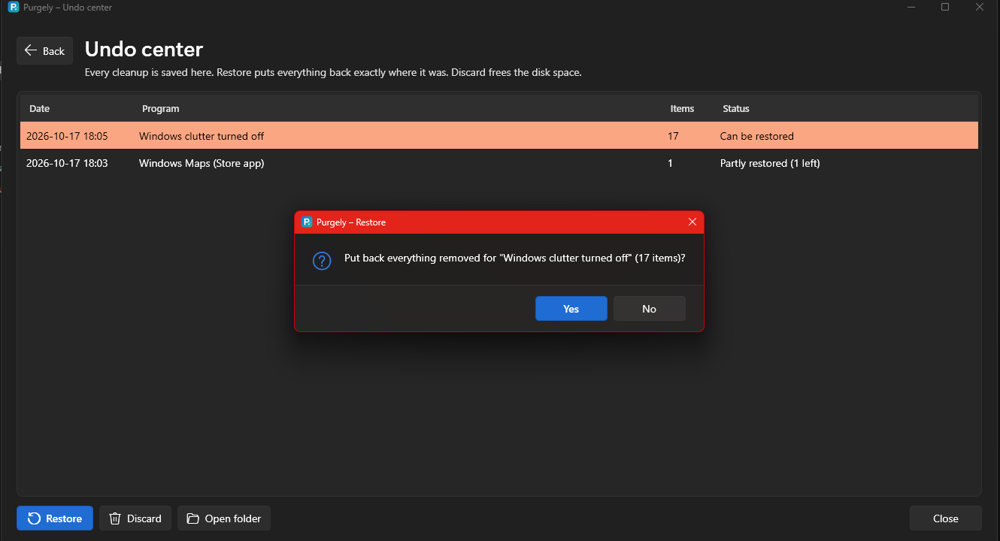

Purgely
The ultimate PC tool for Windows 11 – User Guide
Uninstall completely, clean what programs leave behind, remove bloatware and Windows ads, keep programs and drivers up to date – with a plain explanation for every item and an Undo for almost everything.
FreeNo adsOpen source (MIT)Portable – no installationUndo for everything
Contents
1What Purgely is
2Getting started
3The home screen
4Uninstalling programs
5Several programs at once
6Leftovers and how sure Purgely is
7Installer junk and the PC sweep
8Bloatware, ads, AI and privacy
9Browser extensions
10Updates
11Drivers
12Startup
13Install & Track
14Checkup
15Move to a new PC
16Timeline and notices
17The Undo center
18Safety promises
19Settings and removing Purgely
20Questions and problems
21Help make Purgely better
1What Purgely is
Windows' own uninstaller removes a program's main files and leaves the rest: folders in AppData, registry keys, scheduled tasks, startup entries, services. Over the years a PC fills up with things nobody remembers installing.
Purgely is one tool for keeping a Windows 11 PC tidy. It understands programs instead of deleting by name alone: every item it finds comes with the reason it belongs to the program and how sure Purgely is. Things other programs still use are never touched. Before anything is removed it is copied to the Undo center, so a mistake can be put back with one click.
Clean
Uninstall programs, Store apps and portable programs completely – also many at once – and clean what removed programs left behind.
Declutter
Remove bloatware, turn off ads, suggestions, AI features and optional data collection, check browser extensions.
Maintain
Update programs (winget) and drivers (only signed, from Microsoft or your PC's maker), control what starts with Windows.
Protect
Check installers before you run them, record what they change, notice bundled extra software, and undo it all later.
Nothing changes until you confirmPurgely only looks until you click a button that says what will happen. Almost everything can be undone.
2Getting started
Purgely is a single file, Purgely.exe. There is nothing to install.
- Download Purgely.exe from the project's GitHub Releases page. The file SHA256SUMS.txt next to it lets you check that the download is genuine.
- Double-click it. Windows asks for administrator rights – Purgely needs them to clean programs installed for all users, services and the registry.
- If Windows shows "Windows protected your PC", click More info → Run anyway. This appears for new programs that are not yet widely downloaded.
- The first time, a short welcome tour (three steps) explains how Purgely works. You can see it again any time in Settings (the gear button at the top right).
Requirements
Windows 11 (Windows 10 works for most features). For updates and "Move to a new PC" Windows needs App Installer (winget), which is part of Windows 11.
Your data
Purgely keeps its records on your PC only: settings and history in %LOCALAPPDATA%\Purgely and C:\ProgramData\Purgely, backups in Purgely Undo folders. Only administrators can change these folders, so nobody can slip their own changes into a backup. Purgely sends nothing about you anywhere. It goes online when you ask for updates, drivers or a VirusTotal lookup – and once a day it asks GitHub whether a newer Purgely exists (you can turn this off in Settings).
Signed in with a standard account?
If you start Purgely from a standard account and type an administrator's password, Purgely runs as that administrator. Programs installed for everyone are handled normally, but your own settings and AppData folders belong to your account – the home screen tells you when this is the case. For a complete cleanup, sign in with an administrator account.
3The home screen

The home screen: ten tiles with a live summary, Notices on the right. (Version 0.4 adds the Checkup and Move to new PC buttons at the top.)
Each tile shows a short summary that Purgely counts in the background. An orange dot means "worth a look". The Notices panel collects things Purgely noticed – for example a program that switched itself back on at startup, or Windows bringing back an app you removed. Notices never change anything by themselves.
Shortcuts: start typing a program's name anywhere on the home screen to jump to it; F5 counts everything again, Esc goes back from any page.
4Uninstalling programs
Open Uninstall programs, pick a program and click Uninstall (or double-click it).
- Purgely starts the program's own, official uninstaller and follows it – also uninstallers that have no window (like OneDrive) and helpers they start.
- If the uninstaller asks questions, its window is shown and Purgely waits. If it seems stuck, Purgely tells you.
- When the program is gone, Purgely scans for leftovers and shows them for review (see chapter 6).
- Programs that came together (a "suite", e.g. several parts of one product) are offered for removal as well.
Special cases
| Situation | What Purgely does |
|---|
| Microsoft Store apps | Listed with your programs. Removed for your account by Windows itself. The Undo entry opens the app's Store page, so you can reinstall it. |
| Portable programs | Folders with a program that was never installed (unzipped tools, games). "Uninstall" shows the folder and its traces for review. A folder directly on a drive is never pre-ticked. |
| Broken uninstaller | Force uninstall – after your confirmation Purgely stops the uninstaller and removes the program's parts itself, everything to the Undo center first. |
| Runtimes (Visual C++, .NET) | The Dependencies column shows which programs need them. Purgely warns before you remove one that is used. |
| Suggestions | Tick Suggestions to see programs with no sign of use for six months, or several programs that do the same job (two antivirus programs, three PDF readers). These are hints only. |
5Several programs at once
Tick the boxes in front of the programs and click Uninstall N ticked. Purgely removes them one after another – never two at the same time, because Windows Installer allows only one.
- Quiet mode (on by default): programs that support it are removed without questions – Windows Installer packages, Inno Setup and NSIS uninstallers, and programs that offer their own quiet uninstall. The others still show their window; answer it and Purgely continues by itself.
- A slow or stuck uninstaller can be skipped – it is never killed. You can finish it later on its own.
- At the end one leftover scan covers all removed programs together.
Before you startClose the programs you remove and save your work in them. An uninstaller can't be undone by Purgely – only the leftovers Purgely removes go to the Undo center.
6Leftovers and how sure Purgely is
After an uninstall – or for a program removed long ago (Clean leftovers) – Purgely searches files, folders on every drive, the registry, services, drivers, scheduled tasks and startup entries.

Every item says what it is, where it is, why it belongs to the program, and how sure Purgely is.
| Confidence | Meaning |
|---|
| Very sure (85 % and up) | Several strong proofs, e.g. the install folder and items that run from it. |
| Likely (70–84 %) | Strong proof. Ticked when the program is gone. |
| Maybe (45–69 %) | Only the name matches – offered, never ticked. Tick it yourself if you agree. |
| Keep (shared) | Another installed program uses it. Never removed. |
Besides files and the registry, Purgely finds the program's right-click menu entries, file types (for example ".mp4 opens with…"), Win+R program paths, firewall rules and PATH entries. They are offered only when they point into the program's own folder, or when their name matches and what they point at is gone. Your own choice of default apps is never changed. A PATH entry is taken out on its own – the rest of PATH stays exactly as it was.
Purgely also knows popular programs that leave things where a name search can't find them (OneDrive, Teams, Chrome, Steam, Adobe and more). Their settings and saves are offered but never ticked – remove them only if you don't need them.
The scan compares what it found with the size Windows recorded. If a big part seems missing (for example a game on another drive), it warns you and lets you add the folder with Add folder….

Clean leftovers lists removed programs that left traces. "Find leftovers by name" works for programs removed long ago.
7Installer junk and the PC sweep
Installer junk finds cached setup files that no installed program needs any more – often hundreds of megabytes in C:\Windows\Installer and Package Cache.

Only installers of programs that are no longer installed are offered.
Sweep whole PC (on the Clean leftovers page) looks for traces of programs removed long ago: shortcuts and startup entries that point to nothing, scheduled tasks and services whose program file is gone, and completely empty folders. Only provably dead items are ticked.
8Bloatware, ads, AI and privacy
The Bloatware tile opens a page with three tabs.
Preinstalled apps

Every app has a verdict and a reason.
| Verdict | Meaning |
|---|
| Safe to remove | Ads, trials and promotions (news apps, "Tips", the maker's welcome apps). Ticked. |
| Check | Some people use these – Xbox and Game Bar, Phone Link, Copilot, Teams, OneNote, Get Help. Never ticked. |
| Keep | Microsoft Store, App Installer, Windows Security, codecs, your hardware's control panels. Hidden unless you ask; Purgely warns before removing. |
Ads, AI & privacy

Switches for ads in Start and on the lock screen, apps installed without asking, Bing in search, tips and nags.
Three groups: Ads and suggestions, AI features (Recall snapshots, Click to Do, Copilot, Copilot in Edge – your choice, only Recall is ticked) and Privacy (optional diagnostic data, typing data, activity history, feedback requests). Before each change the old value is saved; restore "Windows clutter" in the Undo center to put everything back exactly as it was.
Windows brought it back?Big Windows updates sometimes reinstall apps or switch ads back on. Purgely remembers what you removed and shows a notice on the home screen when that happens.
9Browser extensions
The third Bloatware tab lists the extensions of Chrome, Edge, Brave, Vivaldi and Firefox for each browser profile. For every extension Purgely shows:
- Where it came from – the browser's store, or outside the store (installed by another program – the most common way adware arrives).
- What it may do, in plain words – "can read and change every website", "can watch your web traffic", "can read your cookies".
Click Manage in browser to open the browser's own extension page and remove or turn it off there – that way browser sync doesn't bring it back. Store page shows what the extension is and its reviews.
10Updates

Updates run hidden; Purgely shows the download, the check and the installation.
Purgely asks Windows Package Manager (winget) which programs have a newer version. Update installs one, Update all goes through the list and gives a short report. Downloads come from the publishers' official sources and are verified before installing. If a program must be updated with its own updater, Purgely says so.
11Drivers

Your PC's parts with their drivers. Built-in Windows drivers are hidden by default.
- Check for newer drivers looks each device up by its hardware ID in Windows Update and Microsoft's Update Catalog.
- A driver is installed only when it is signed by Microsoft (WHQL), its checksum matches and it lists your exact device. A restore point is made first, and the Undo center can remove the new driver again.
- The maker's driver page button opens the support page of your PC's brand (or your motherboard). Install downloaded driver checks the digital signature of a file you downloaded there.
- Graphics cards: NVIDIA, AMD and Intel's own apps are the best source – Purgely tells you when they are installed. Intel and NVIDIA publish some drivers (for example Intel Management Engine) in their apps weeks before Microsoft's catalog; those devices say "Intel DSA / NVIDIA app may have a newer one".
- Devices that are not plugged in (for example a USB network adapter) are skipped – a driver is only installed for a device Purgely can check.
Never from driver websitesPurgely never uses third-party "driver updater" sites. Firmware and BIOS are never touched.
Repair
The Repair button on the home screen fixes common problems with Windows' own tools:
- Devices that don't work – what Windows' problem code means in plain words, and Restart device, Reinstall device, Turn on or Look for a driver. Disk controllers, processors and other parts Windows needs to start are never reinstalled.
- Devices that aren't connected – old USB sticks, mice, phones and adapters Windows still remembers. Nothing is ticked for you; a forgotten device is set up again when you plug it in.
- No sound – restarts Windows Audio. No internet – a test that shows where the connection breaks, a refresh, and a full network reset as the last resort.
- A DLL is missing – installs the official Microsoft packages (Visual C++, DirectX, .NET) instead of single DLL files from websites.
12Startup
Everything that starts with Windows, grouped by program, with its impact and whether it is safe to turn off. Turn off never deletes anything. Start 2 min later keeps a program but lets Windows get ready first. Keep off turns it off again if the program switches itself back on. Optimize turns off only what Purgely's knowledge base marks as safe – and Undo optimize reverses it. The page shows your boot time before and after.
13Install & Track
Try a new program without worrying: Purgely records what its installer changes and can put your PC back exactly as it was.
- Click Choose installer and start… and pick the setup file.
- Check before you install – Purgely shows who signed the file, which website it was downloaded from, what kind of installer it is, and whether it contains a known advertising "offer" toolkit. VirusTotal report looks the file up by its fingerprint (nothing is uploaded).
- Install and track – Purgely saves a snapshot (registry, files, optional restore point) and starts the installer.
- When the installer is finished, click The installer has finished. Purgely shows what was added – and warns if programs from other publishers came along (bundleware).
- Use the program as long as you like. Then choose Keep, or Revert to remove everything the installer added.
14Checkup
The Checkup button on the home screen looks at the whole PC at once: installer junk, dead leftovers, startup programs known to be safe to turn off, ads and privacy settings, ad apps, program updates and drivers. Each finding is a card with a summary and a Review button that opens the full page.
Only what Purgely is sure about is ticked. Fix ticked uses exactly the same code as each page – so everything goes to the Undo center.
15Move to a new PC
- On the old PC: Move to new PC → Save my program list… Purgely saves a small list (.json) and a text file with programs you have to install yourself (programs winget doesn't know, portable folders).
- Copy the file to the new PC (USB stick, OneDrive, e-mail).
- On the new PC: Install from a list… – every program that isn't installed yet is downloaded from its official source and installed, one by one.
16Timeline and notices

When programs arrived, changed or left – and what came bundled.
The Timeline records installs, updates and removals, also those done outside Purgely. When programs from different publishers appear at the same moment, Purgely flags possible bundleware – software an installer slipped in.
17The Undo center

Every cleanup is a package that can be restored.
- Restore puts everything in a package back where it was. Newer files are never overwritten.
- If something could not be put back, the package says so and Restore can be tried again later.
- Backups stay on the same drive as the original (in a Purgely Undo folder), so a big game on D: is never copied to C:.
- Discard deletes a package and frees the disk space – do it once you are sure everything works.
- Store apps can't be copied back – their package opens the Microsoft Store page instead.
18Safety promises
These rules are built into Purgely and checked by automatic tests and a safety audit on every change.
| Purgely never… | Why |
|---|
| removes your own files (Documents, Desktop, Downloads, OneDrive, Dropbox) | Your work is not a leftover. |
| touches anything another installed program uses | Removing a shared folder breaks the other program. |
| ticks an item on weak evidence (only a matching name) | People click whatever is recommended – it must be safe on its own. |
| follows links (junctions) out of a leftover folder | A link could lead to your Documents. |
| deletes structural Windows registry keys or Windows files | They keep Windows running. |
| removes a file before its backup copy is verified | A full disk must not lose data. |
| kills a program you didn't confirm, or any browser or Explorer | Only the uninstaller you chose to stop. |
| installs drivers from third-party sites, or unsigned drivers | Drivers run with full power over the PC. |
| loads cleaning rules from disk at run time | Only reviewed, built-in rules can tell Purgely what to remove. |
| shows ads, bundles software or sends your data anywhere | That is what Purgely protects you from. |
Every new version is tested with fake programs and "traps" – files that look like leftovers but must survive – in Windows Sandbox or on a real PC.
19Settings and removing Purgely
The gear button at the top right of the home screen opens Settings.
| Setting | What it does |
|---|
| Check for new versions | Once a day Purgely asks GitHub whether a newer version was released and shows a notice on the home screen. Nothing is downloaded or installed by itself – you open the release page and replace Purgely.exe. Dismissing the notice skips that version. |
| Keep Timeline history | Forever, 1 year, 90 days or 30 days. What Purgely needs to find leftovers of recently removed programs is always kept. |
| Undo backups | How much space Purgely's backups use, with a shortcut to the Undo center. |
| Help | The welcome tour, this guide, and "Report a problem". |
Remove Purgely and its data
A tool that cleans up after programs should leave nothing behind itself. Settings → Remove Purgely… shows exactly what will be deleted – Purgely's backups, history and settings, and Purgely.exe if you want – and asks before doing anything.
Restore firstAfter Purgely is removed, its backups are gone and nothing it removed can be put back. Restore what you want from the Undo center first. What you changed with Purgely (ads turned off, startup items) stays as you set it.
20Questions and problems
| Question | Answer |
|---|
| I removed something I need. | Open the Undo center, select the package and click Restore. |
| A program came back after removing it. | Check the Notices – often a big Windows update or another program reinstalled it. Startup items can be set to Keep off. |
| "Windows protects this switch". | Some settings (like the Widgets button) can only be changed in Windows Settings – Purgely tells you where. |
| An uninstaller seems stuck. | Wait a moment – some work silently. Then use Force uninstall, or Skip this one in bulk mode. |
| "winget not found". | Install or update App Installer from the Microsoft Store. |
| Some items need a restart. | Locked files are removed at the next restart – they are already backed up. Removed firewall rules also disappear after a restart. |
| "A newer Purgely is available". | Click Open download page, download the new Purgely.exe and replace the old one. Your backups and history stay. |
21Help make Purgely better
Purgely is open source under the MIT license: free to use, free to share, and anyone can read every line of what it does.
- Knowledge base – what Purgely knows about bloatware and popular programs lives in readable files (src/Purgely/Knowledge). Found an app that should be on the list, or a folder a program leaves behind? Suggest it on GitHub – CONTRIBUTING.md explains how. Every suggestion is reviewed before it reaches anyone.
- Bugs and ideas – open an issue at github.com/kraljforgelabs/Purgely, or use Settings → Report a problem.
- Beta testers – version 0.9 is a public beta. BETA.md on GitHub lists what to try and how to report it.
KraljForge LabsPractical tools forged for the future. Purgely is free and ad-free and will stay that way.
Screenshots show versions 0.3–0.4 on Windows 11; your screens may differ slightly. © 2026 KraljForge Labs · MIT License.